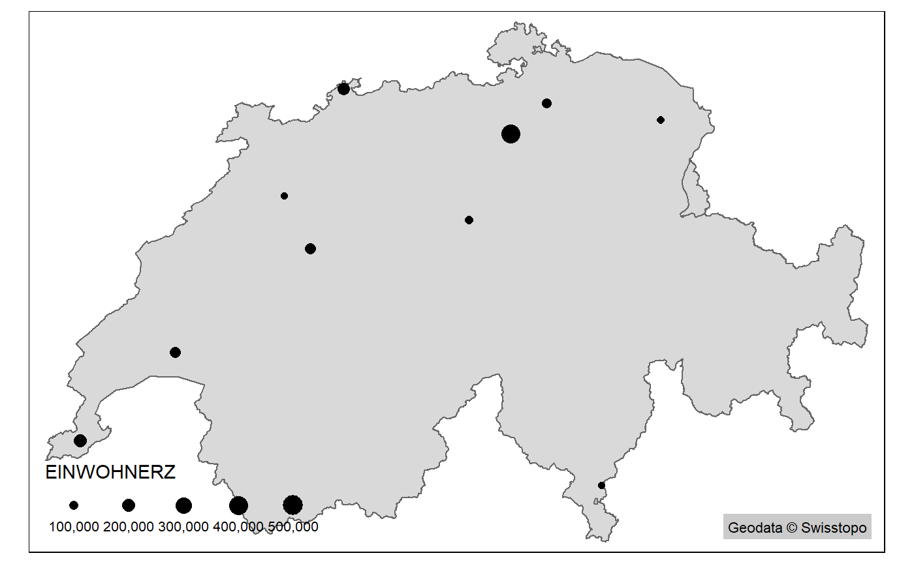

How is this package used?
swissrastermaps4r.RmdAquire raster data
First of all, the raster maps need to be acquired and stored in a folder. The package is developed with a focus on SwissMapRaster, but probably other raster maps will work as well. Currently only CRS 2056 is implemented. We might also include CRS 21781 at some point but that’s probably it.
The raster maps should be sorted in a folder per scale. Currently, the names of the folders must be as follows: “SMR25” for 1:25’000 maps, “SMR50” for 1:50’000 maps and so on. Rasters should not overlap or have gaps.
Download package
Download and load the package. It is currently only available on github.
Scan Folder
Next, run the command init_fdir() pointing to the location (parent folder) of this maps. This command creates a “File Directory” in the package environment by scanning all folders recursively and analyzing the content. All files ending with “tif” are checked for extent, number of layers and resolution. All the mentioned attributes of each raster file, along with the file path and the extent as a geometry, are stoerd in the variable fdir of the package environment.
## [1] "Done. 372 Files saved in fdir. Use show_extents() to show their extents."init_fdir stored an sf object in the package’s own environment (called packageEnv). It’s a list of all raster files, stored with their extent, scale, resolution and other information (see init_fdir()).
## [1] "fdir"Show available raster extents
In order to view the available extents, call the function show_extents(). The default method is ggplot2.
Use method = "tmap" to show the extents in combination with other spatial data. For example, the boundary of switzerland is included in the package. Load this dataset with data("landesgebiet")

Retrieve single raster
Now let’s look at an example where this package actually comes to some use. Say you want to plot a map of the largest cities in Switzerland. There is a sample dataset included in the package with name, location and size of the 10 largest cities in Switzerland.
## Simple feature collection with 10 features and 2 fields
## geometry type: POINT
## dimension: XY
## bbox: xmin: 2500063 ymin: 1099230 xmax: 2746142 ymax: 1267460
## epsg (SRID): 2056
## proj4string: +proj=somerc +lat_0=46.95240555555556 +lon_0=7.439583333333333 +k_0=1 +x_0=2600000 +y_0=1200000 +ellps=bessel +towgs84=674.374,15.056,405.346,0,0,0,0 +units=m +no_defs
## # A tibble: 10 x 3
## NAME EINWOHNERZ geometry
## <chr> <int> <POINT [m]>
## 1 Zürich 402762 (2682518 1248416)
## 2 Genève 198979 (2500063 1118118)
## 3 Basel 171017 (2611665 1267460)
## 4 Lausanne 137810 (2540102 1155660)
## 5 Bern 133115 (2597542 1199612)
## 6 Winterthur 109775 (2697619 1261471)
## 7 Luzern 81592 (2664743 1211894)
## 8 St. Gallen 75481 (2746142 1254173)
## 9 Lugano 63932 (2720846 1099230)
## 10 Biel/Bienne 54456 (2586535 1222040)We can plot a simple map using the sample data already demonstrated:
tm_shape(landesgebiet) +
tm_polygons() +
tm_shape(gemeinden_top_centroid) +
tm_dots(size = "EINWOHNERZ")
Now if you would want to include a swiss raster map into this plot you would:
- first decide on a scale
- look for the relevant map numbers based on the division (“Blatteinteilung”)
- find the appropriate raster maps based on the map numbers from the previous step
- check raste resolutions and possilby resample all rasters to same resolution
- merge all the relevant raster maps into a single file
- possilbly reassign
CRSandcolormap - import raster into
R
This package aims to automate steps 2 - 7 with the function get_raster(). The function takes an sf object as an input. In addition, scale level (a scale 1:1’000’000 is defined as scale = 1000) and method with which the extent is defined (method =) need to be specified. Currently, two methods are implemented: bbox takes a bounding box while centroid calculates the centroid of the sf object. Both methods accept x_add/y_add with which the extent window is enlarged. Method centroid requires x_add/y_add, since the extent windows would have x/y demensions of Zero.
Retrieve multiple rasters
In the previouse example, little was gained using the get_raster function. The function get’s much more useful when multiple raster are needed. Using the same dataset, we can get a raster per city using the option per_feature = T.
rastermap <- get_raster(features = gemeinden_top_centroid,
x_add = 1000,
y_add = 1000,
per_feature = T,
scale_level = 25,
method = "centroid",
limit = 4)If multiple rasters are returned, the output is a list() of rasters with a length corresponding to the number of featuers (i.e. rows) in the input features. To access the first map in the list, we use the double parenthese [[]].

We can of course now add all of our vector data stored in the input feature. To keep things simple, we’ll refrain from doing this in this example. Just one last thing: Having the maps in lists lets us wield the power of purrr: